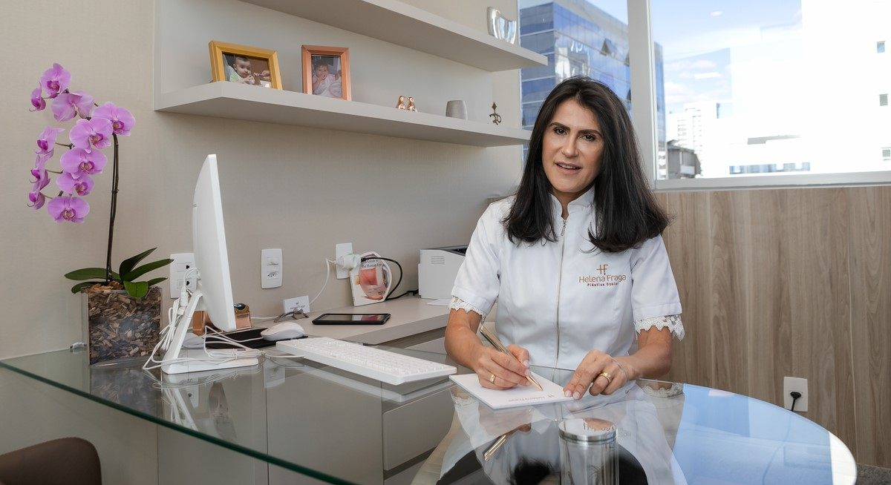
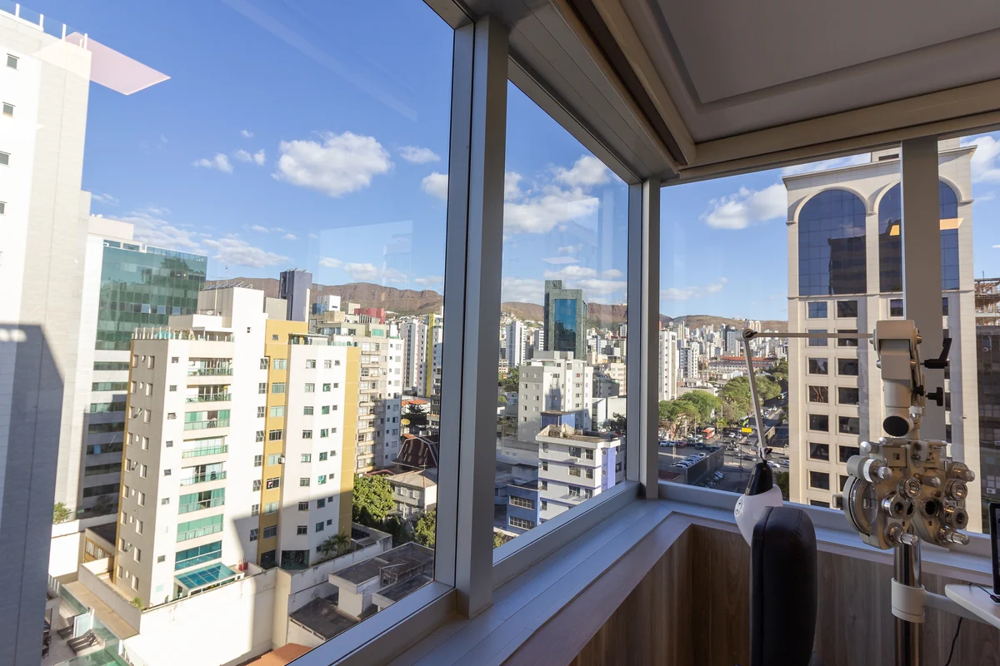
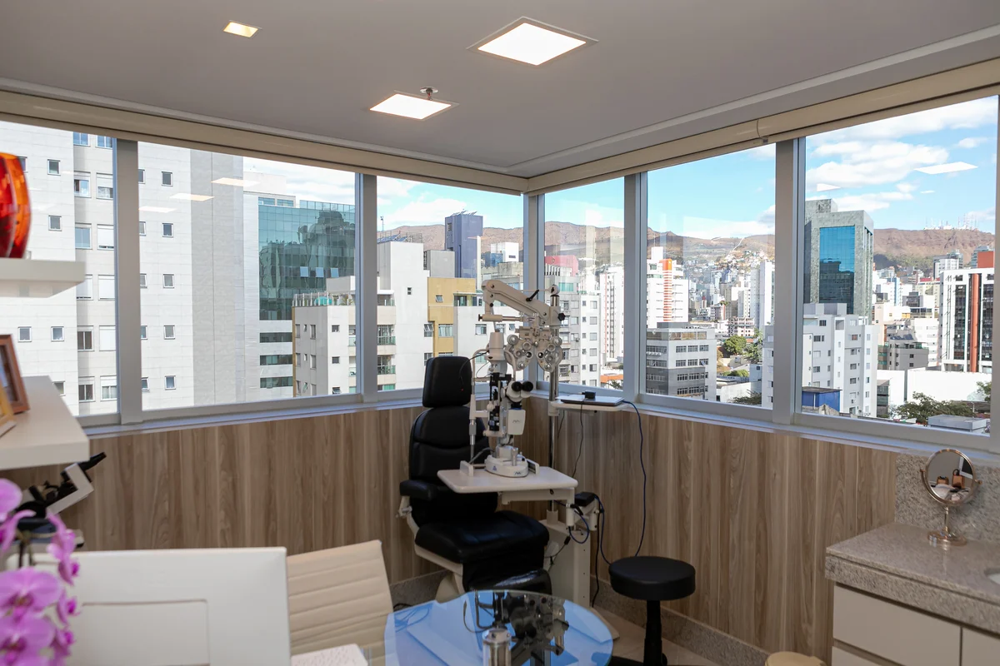
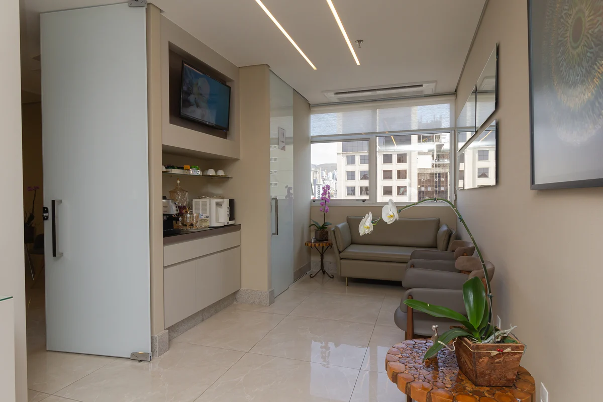

Plástica ocular · Belo Horizonte
Ressecção de tumores conjuntivais com cola biológica

A conjuntiva é a membrana transparente que recobre o globo ocular e o interior das pálpebras. Pode ser acometida por tumores benignos ou malignos.
Dra. Helena Fraga · Oftalmologista · CRM-MG 26838 · RQE 21631
Agendar consulta Atendimento particular · SavassiO que você percebe:
- i.Redução da visão
- ii.Olho vermelho persistente
- iii.Aumento da pigmentação
- iv.Surgimento de pinta na superfície do olho
- v.Dor nos olhos
O diagnóstico é confirmado por exame clínico, biomicroscopia e biópsia.
Agendar consultaComo é feita
Depois da análise e do planejamento, o tumor é retirado e o fechamento é feito com cola biológica, que é mais confortável e pode substituir os pontos com fios cirúrgicos.
Agendar consultaDepoimentos de pacientes
Depoimentos em áudio
Exclusividade · incluso na cirurgia
Recuperação acompanhada de perto
Além da cirurgia, fazemos o acompanhamento personalizado em grupo individualizado de WhatsApp, com a Dra. Helena e equipe multidisciplinar, com acesso 24 horas por dia.
- Primeiro diaCuidados intensificados para recuperação rápida.
- Primeiras semanasDrenagens linfáticas, fotobiomodulação e retornos personalizados.
- Todos os diasGrupo de WhatsApp exclusivo com a Dra. Helena e equipe multidisciplinar.
- Até a altaPelo tempo que for preciso, com fisioterapeuta, biomédica esteta, enfermeira e médicos da equipe.
Quem opera

Oftalmoplástica com experiência em clínica, ortomolecular e medicina regenerativa.
- UFMG
- Medicina e residência em Oftalmologia
- Fellowship
- Retina e plástica ocular
- CBO
- Especialista em Oftalmologia
- SBCPO
- Especialista em cirurgia plástica ocular
- 30.000+cirurgias realizadas
- 33+anos de medicina
- 4,9avaliação no Google
A clínica, na Savassi
Ambiente reservado e confortável, no coração da Savassi.



Na consulta, vamos descobrir como valorizar sua beleza natural.
Agendar consulta- Endereço
- R. Rio Grande do Norte, 1436, sala 1205 · Savassi
- (31) 98446-1501